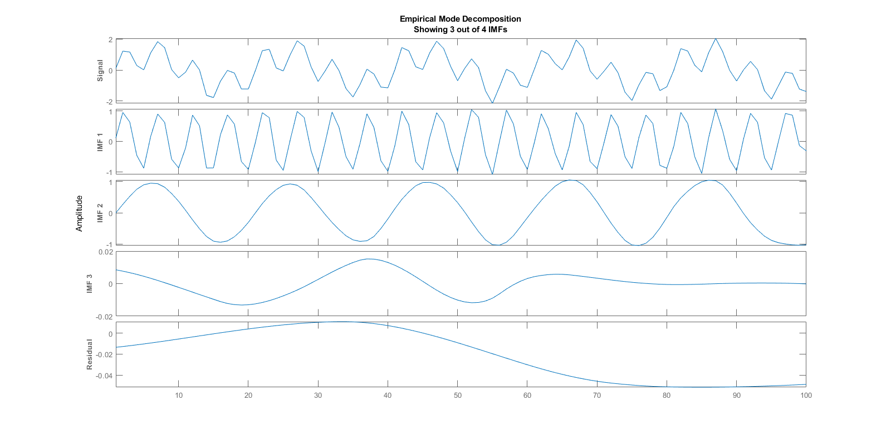
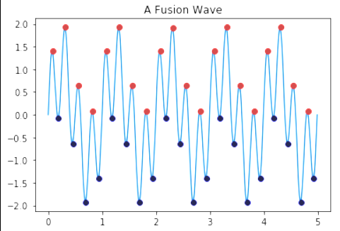
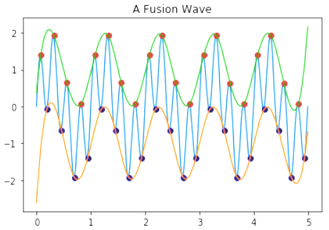
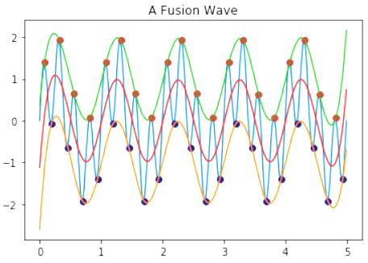
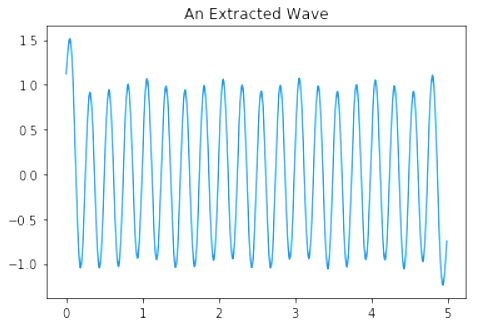

Empirical Mode Decomposition#
Definition#
Introduced by Hilbert–Huang, Empirical Mode Decomposition (EMD) is a data-driven method that used as a propelling tool for analyzing and decomposing non-stationary and non-linear data. EMD generates a finite and often small number of the frequency and amplitude modulated signals, intrinsic mode functions (IMF).
X: original signal
The residuum, \(r(t)\), represents the signal trend. EMD can be also compared with other analysis methods such as Fourier transform and Wavelet transform.
IMF functions must satisfy two main conditions:
The number of extrema must be equal to the number of zero-crossings or, their difference must be equal to 1
For instance
Total minima 50
Total maxima 51The IMFs have zero-mean — meaning the average envelope value described by the local maxima and minima has to be equal to zero.
Ex:
Mean = 0
Taken a signal, let’s plot some IMFs functions from using MATLAB:
load('sinusoidalSignalExampleData.mat','X','fs')
X = X(1:100); % We only get the first 100 element
t = (0:length(X)-1)/fs;
emd(X,'Interpolation','pchip');

As we can remark the first extracted IMF contains the fastest oscillations from the signal, the last extracted IMF the slowest.
How IMFs are obtained?#
In the standard EMD algorithm, we obtained IMFs by sifting procedure:
Identify all extrema of the signal.
Interpolating between the determined minima and maxima, and get the upper and lower envelope and averaging them.
Subtracting the average obtained in part 2 from the input signal.
Replacing the signal by the calculated result in part 3 and repeating the algorithm upon achieving a zero averaged process.
Taking an example, step by step we have:
 \(\Rightarrow\) 
 \(\Rightarrow\) 
Limitations of Standard EMD algorithm#
The process to compute IMFs function with standard EMD algorithm draw some limits:
The extrema locations: In case of continuous signals, the real extrema might be lost during the sampling procedure.
The interpolation between extrema: depend on the location of the extrema
The signal initial and ending points
etc.
Given this limitations, investigations are made in order to improve the EMD algorithm. The most known is the ones provided by Huang and Rilling.
Applications#
EMD are currently used in:
Biomedical, Neuroscience, Epidemiology, Chemistry and chemical engineering, Financial applications (because it work with time series), Image processing, Meteorological and atmospheric application, Solar physics, Ocean engineering, Seismic studies, etc… (source: from Wikipedia)
References#
H. Ahmadi and A. Ekhlasi, “Types of EMD Algorithms,” no. December, pp. 18–19, 2019.
Comments
comments powered by Disqus